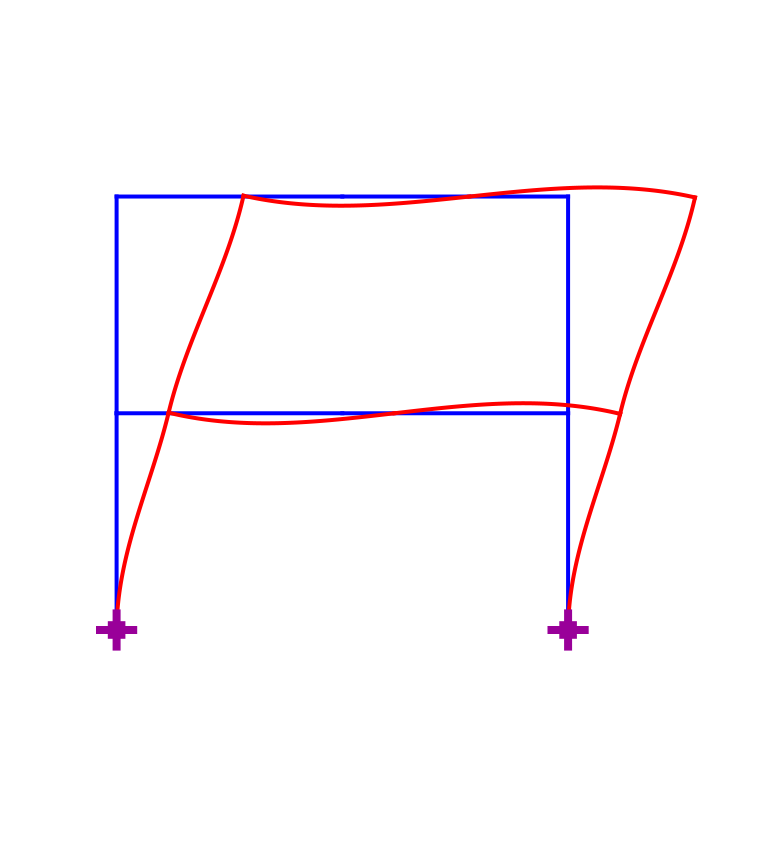

Analysis of 2-Story Steel Frame
The script files contain the geometry, the element properties and the loading of a 2-story, 1-bay steel frame. The description of the model is subdivided into the following scripts:
Description of model geometry with boundary conditions in a file with prefix
Model.Description of the element properties in a file with the suffix
ElemData.LinearElemData.mspecifies the properties for linear elastic frame elements, andSimpleInelElemDatafor simple inelastic elements that will be discussed in the course of this semester.
Four scripts are provided for the following types of analysis:
- Linear elastic analysis under static loads (file
S_LinearAnalysis.m). - Vibration periods and mode shapes (file
S_PeriodNModes.m). - Transient analysis under ground acceleration with mode superposition (modal analysis) (file
S_ModalAnalysis.m). - Determination of the collapse load factor, the basic forces at incipient collapse and the collapse mechanism by the lower and upper bound theorems of plastic analysis (file
S_PlasticAnalysis.m).
All analysis scripts start with calls of A and B for the description of the model geometry and element properties.
The first script then specifies the applied loading and use the function LinearStep.m to determine the linear static solution with the direct stiffness implementation of the displacement method of analysis. The post-processing of the results takes place in a separate script called
Post_LinearAnalysis.mThe second script specifies the lumped mass matrix of the model and uses the function
EigenMode.mto determine the period and the shape of its eigenmodes.The third script specifies the influence vector at the free DOFs under horizontal support acceleration and the ground acceleration record. It then uses the function ModalAnalysis.m to determine the transient response of each mode to the support acceleration. The post-processing of the results takes place in a separate script called
Post_ModalAnalysis.m.The fourth script specifies the reference load distribution and then uses the function PlasticAnalysis.m to determine the collapse load factor, the basic forces at incipient collapse and the plastic collapse mechanism. The post-processing of the results takes place in a separate script called
Post_PlasticAnalysis.m.
